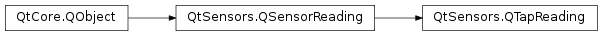

QTapReading¶
Synopsis¶
Functions¶
- def
isDoubleTap() - def
setDoubleTap(doubleTap) - def
setTapDirection(tapDirection) - def
tapDirection()
Detailed Description¶
ThePySide2.QtSensors.QTapReadingclass represents one reading from the tap sensor.
QTapReading Units¶
The tap sensor registers tap events along the 3 axes that originate from the phone. The axes are arranged as follows.

By default it returns only double tap events. The
QTapSensor.returnDoubleTapEventsproperty must be set to false to return individual tap events.
-
class
PySide2.QtSensors.QTapReading(parent)¶ Parameters: parent – PySide2.QtCore.QObject
-
PySide2.QtSensors.QTapReading.TapDirection¶ The tap direction is indicated using flags. Applications should check for the presence of a particular flag as multiple flags may be set at once.
The X, Y and Z flags allow an app to check for taps along an axis without caring about the direction.
if (reading->tapDirection()&QTapReading::X) { ... }
The *_Pos and *_Neg flags allow checking for taps in a specific direction. Note that some devices cannot determine the direction of a tap and will set both the _Pos and _Neg flag for the detected axis. Previous versions of the API did not allow this. Applications that check for the _Pos and _Neg flags as values should be updated so they can work with all devices.
For example, if you have code like
you can rewrite it as
Constant Description QTapReading.Undefined This value means that the direction is unknown. QTapReading.X This flag is set if the tap was along the X axis. QTapReading.Y This flag is set if the tap was along the Y axis. QTapReading.Z This flag is set if the tap was along the Z axis. QTapReading.X_Pos This flag is set if the tap was towards the positive X direction. QTapReading.Y_Pos This flag is set if the tap was towards the positive Y direction. QTapReading.Z_Pos This flag is set if the tap was towards the positive Z direction. QTapReading.X_Neg This flag is set if the tap was towards the negative X direction. QTapReading.Y_Neg This flag is set if the tap was towards the negative Y direction. QTapReading.Z_Neg This flag is set if the tap was towards the negative Z direction. QTapReading.X_Both Equivalent to X_Pos|X_Neg. Returned by devices that cannot detect the direction of a tap.QTapReading.Y_Both Equivalent to Y_Pos|Y_Neg. Returned by devices that cannot detect the direction of a tap.QTapReading.Z_Both Equivalent to Z_Pos|Z_Neg. Returned by devices that cannot detect the direction of a tap.
-
PySide2.QtSensors.QTapReading.isDoubleTap()¶ Return type: PySide2.QtCore.bool
-
PySide2.QtSensors.QTapReading.setDoubleTap(doubleTap)¶ Parameters: doubleTap – PySide2.QtCore.boolSets the double tap status of the reading to
doubleTap.
-
PySide2.QtSensors.QTapReading.setTapDirection(tapDirection)¶ Parameters: tapDirection – PySide2.QtSensors.QTapReading.TapDirectionSets the tap direction to
tapDirection.
-
PySide2.QtSensors.QTapReading.tapDirection()¶ Return type: PySide2.QtSensors.QTapReading.TapDirection
© 2018 The Qt Company Ltd. Documentation contributions included herein are the copyrights of their respective owners. The documentation provided herein is licensed under the terms of the GNU Free Documentation License version 1.3 as published by the Free Software Foundation. Qt and respective logos are trademarks of The Qt Company Ltd. in Finland and/or other countries worldwide. All other trademarks are property of their respective owners.